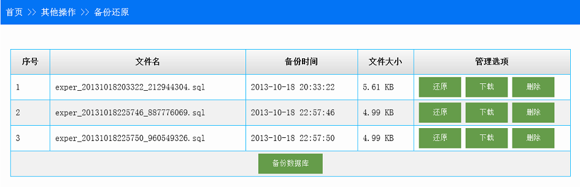

ThinkPHP框架下MySQL数据库备份还原类¶
2013-10-19 | web development
最近在用ThinkPHP框架写一个实验预约网站，到了数据库备份与还原一步，在网上找了一个现成的MySQLReback类，以.sql文件方式备份和还原数据库。本文记录使用过程以作备忘。
备份还原页面总体思路为：
该模块的bacover()方法读取备份目录中的文件列表显示在静态页面，备份/还原/删除文件等操作则异步提交给同模块的dobacover()方法，该方法使用MySQLReback类的方法完成数据库的相应操作。

MySQLReback类文件¶
该文件包含备份还原数据库的方法backup()和recover($fileName)，由于需要连接数据库，类初始化需要传入连接数据库的信息，这些信息可以从配置文件或用户输入获取。
类文件存放位置没有要求，只要能正确引入即可。我将其放在ThinkPHP核心文件夹ORG目录下新建的Backup文件夹下，这样引用目录即为：
import("ORG.Backup.MySQLReback");显示静态页面和相应操作的方法¶
以下是Other模块下的两个方法
-
bacover()：查找备份目录，读取文件以供前台显示/* ** 备份还原数据静态页面 */ public function bacover(){ $DataDir = "./Public/backup/"; // 设置服务器上的备份目录 // 查找目录下文件、 $FilePath = opendir($DataDir); while (false !== ($filename = readdir($FilePath))) { $FileAndFolderAyy[] = $filename; } sort($FileAndFolderAyy); // 逆序排列 rsort($FileAndFolderAyy); foreach ($FileAndFolderAyy as $i => $n){ if($i>1){ // 0,1分别为当前及上级目录，2才是当前文件开始 $list[$i-2]['FileName'] = $n; $list[$i-2]['FileTime'] = date('Y-m-d H:i:s',filemtime($DataDir.$n)); $FileSize = filesize($DataDir.$n)/1024; if ($FileSize < 1024){ $list[$i-2]['FileSize'] = number_format($FileSize,2).' KB'; } else { $list[$i-2]['FileSize'] = number_format($FileSize/1024,2).' MB'; } } } $this->assign('list',$list); $this->display(); } -
dobacover()：读取前台信息，调用MySQLReback()方法完成操作/* ** 备份还原数据操作 */ public function dobacover(){ $DataDir = "./Public/backup/"; // 设置服务器上的备份目录 $action = I("action"); $file = I("file"); if (!empty($action)) { import("ORG.Backup.MySQLReback"); // 第三方备份还原类 // 从配置文件读取数据库连接信息，默认要求配置文件中式分项配置的，而不是'DB_DSN' $config = array( 'host' => C('DB_HOST'), 'port' => C('DB_PORT'), 'userName' => C('DB_USER'), 'userPassword' => C('DB_PWD'), 'dbprefix' => C('DB_PREFIX'), 'charset' => 'UTF8', 'path' => $DataDir, 'isCompress' => 0, //是否开启gzip压缩 'isDownload' => 0 ); $mr = new MySQLReback($config); $mr->setDBName(C('DB_NAME')); if ($action == 'backup') { $mr->backup(); $this->ajaxReturn('','备份数据库成功！',2); } elseif ($action == 'recover') { $mr->recover($file); $this->ajaxReturn('','还原数据库成功！',2); } elseif ($action == 'delete') { if (@unlink($DataDir . $file)) { $this->ajaxReturn('','删除数据库备份文件成功！',2); } else { $this->ajaxReturn('','删除数据库备份文件失败！',1); } } if($action == 'download') { $fileName = $DataDir . $file; ob_end_clean(); header("Cache-Control: must-revalidate, post-check=0,pre-check=0"); header('Content-Description: File Transfer'); header('Content-Type: application/octet-stream'); header('Content-Length: ' . filesize($fileName)); header('Content-Disposition: attachment; filename=' . basename($fileName)); readfile($fileName); exit(); } } }
前台视图¶
一个table显示后台bacover()传输的备份文件数据，用Jquery的ajax提交请求，ajax_submit_action()是自定义的提交请求的方法，这里略去。
主要思路：通过设置不同操作的按钮的类名来区分不同的业务；另外，由于下载文件操作通过ajax方法完成，直接提交到dobacover()方法即可。
<script>
$(document).ready(function() {
$(":button").click(function(){
var action = $(this).attr('class');
var id = $(this).attr('id');
var content_obj = {'action':action,'file':id};
var url = "<{:U('Other/dobacover')}>";
switch(action){
case 'recover':
if(confirm("确定还原数据库？"))
ajax_submit_action(url,content_obj,0,1);
break;
case 'delete':
if(confirm("确定删除该备份文件？"))
ajax_submit_action(url,content_obj,0,1);
break;
case 'download': // 下载文件不能异步提交
window.location.href = url + "?action=" +action +"&file=" + id;
break;
default:
ajax_submit_action(url,content_obj,0,1);
}
});
});
</script>
<table>
<thead>
<tr>
<th width="7%">序号</th>
<th width="35%">文件名</th>
<th width="20%">备份时间</th>
<th width="10%">文件大小</th>
<th width="28%">管理选项</th>
</tr>
</thead>
<tbody>
<tr>
<td><{$i}></td>
<td><{$vo.FileName}></td>
<td><{$vo.FileTime}></td>
<td><{$vo.FileSize}></td>
<td>
<input id="<{$vo.FileName}>" class="recover" type="button" value="还原" />
<input id="<{$vo.FileName}>" class="download" type="button" value="下载" />
<input id="<{$vo.FileName}>" class="delete" type="button" value="删除" />
</td>
</tr>
<tr>
<td colspan="5" align="center">
<input id="none" class="backup" type="button" value="备份数据库" />
</td>
</tr>
</tbody>
</table>注意
-
数据库表中某些允许为空的字段，备份导出时字段为
''，在还原数据库时会提示如下错误：MySQL Error : Incorrect date value: '' for column '×××××××××' at row 1这种问题一般出现在
mysql 5.x以上版本，因为要求空值写为NULL。可以在安装mysql的时候去除默认勾选的enable strict SQL mode，已经安装则需要修改mysql的配置文件my.ini。在my.ini中查找sql-mode，将默认的sql-mode="STRICT_TRANS_TABLES,NO_AUTO_CREATE_USER,NO_ENGINE_SUBSTITUTION"修改为
sql-mode="NO_AUTO_CREATE_USER,NO_ENGINE_SUBSTITUTION"然后重新启动Mysql服务。
-
本文上述代码仅适用于本地开发环境，对于一些云计算平台，由于没有本地文件读写的权限，所以需要根据各自提供的API来修正文件操作。后续将以新浪云计算平台SAE为例，给出修改方案。